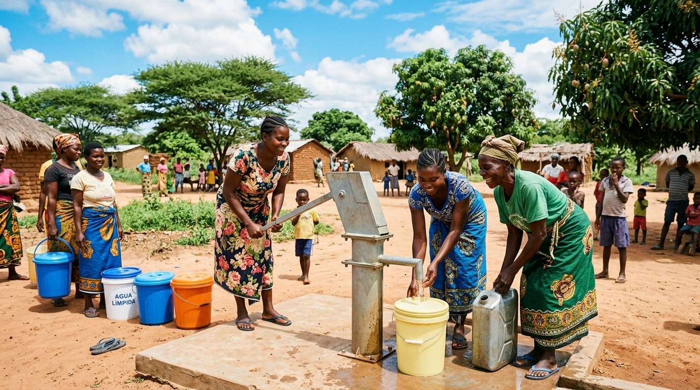

Aplicação multimédia educacional para escolas, comunidades e famílias em Moçambique. Aprenda as medidas práticas de tratamento da água e higiene no dia a dia.
Mini-Projecto Multimédia Educacional
Almeida Fernando Chiboze • Francelino Penisselo • Safira António Vilanculos
Docente: Miguel Maria Ribeiro da Silva | Outubro de 2026
Água Tratada = Vida Saudável
Ecrã 2 • ContextoSaúde Pública
O Desafio Sanitário em Moçambique
Superando a barreira da informação através de recursos visuais e sonoros.

Ponto de Recolha Comunitário: A água de poços abertos e fontanários sem cloração é a via mais comum de contaminação nas épocas chuvosas.
Surtos Pós-Ciclones e Época Chuvosa
As inundações e o consumo de poços desprotegidos aceleram a propagação do Vibrio cholerae nas áreas suburbanas e rurais, causando desidratação rápida.
Barreira da Informação
Folhetos em papel nem sempre chegam a todos. A combinação de imagens, voz e interação facilita a transmissão das regras de prevenção.
Objetivo Central
Demonstrar de forma prática o tratamento com Certeza, a fervura e a lavagem correta das mãos.
Ecrã 3 • Passos de PrevençãoAção Prática
Os 3 Passos Vitais de Prevenção
Medidas simples que quebram o ciclo de contaminação da cólera.
1
Tratar a Água na Origem
Opção A: Fervura Completa Ferver em borbulhas fortes durante 1 a 3 minutos elimina as bactérias ativas.
Opção B: Cloração com Certeza 1 tampa para cada balde de 20 litros. Aguardar 30 minutos em repouso antes de beber.
Simulador de Dosagem (Certeza):
Dosagem: 1 tampa cheia (5 ml) Balde de 20L: adicione 1 tampa de Certeza, misture e aguarde 30 minutos em repouso obrigatório.
2
Balde Sempre Fechado
Mesmo limpa, a água volta a contaminar-se se for mal guardada:
Mantenha o balde sempre com a tampa bem posta.
Evite mergulhar copos ou canecas dentro do balde.
Sempre que possível, use baldes com torneira ou retire com caneca limpa de cabo longo.
Cuidado Essencial
Balde destapado ou caneca suja anula todo o tratamento feito.
3
Lavar as Mãos com Sabão ou Cinza
A higienização deve durar pelo menos 20 segundos:
Sempre após ir à latrina.
Antes de cozinhar ou comer.
Antes de amamentar ou alimentar crianças.
Na falta de sabão, a cinza é uma boa alternativa local.
Contagem de 20 Segundos:
20s
Ecrã 4 • Quiz RápidoAvaliação
Quiz Comunitário
Teste o seu conhecimento prático para aplicar no dia a dia.
Pergunta Prática: Como deve ser tratada a água de um poço aberto antes de beber?
✓
Resposta Correta!
Medida recomendada pelo Ministério da Saúde (MISAU).
Ferver a água até borbulhar ou adicionar Certeza na dosagem certa (1 tampa para 20 litros) e aguardar 30 minutos elimina de forma eficaz a bactéria da cólera.
✕
Atenção: Resposta Incorreta
Prática arriscada para a saúde.
Esta prática retira apenas a sujeira aparente. As bactérias continuam presentes e invisíveis na água.
Ecrã 5 • ConclusãoFicha Técnica & Comunidade
Conclusão e Enquadramento
A prevenção da cólera depende de hábitos diários partilhados na família e comunidade.
Mensagem Comunitária
Tratar a água com Certeza ou fervura, guardar os baldes sempre fechados e lavar as mãos com sabão ou cinza são medidas acessíveis que salvam vidas nas nossas escolas e bairros.
Mural de Acção Comunitária
Modo Local
Registe o compromisso da sua escola, bairro ou família com os cuidados de água e higiene:
Fases do Projecto Multimédia
1. Planeamento
2. Pré-Produção
3. Produção
4. Testes Alfa/Beta
5. Lançamento
Ficha Técnica
Universidade Pedagógica de Maputo • Faculdade de Engenharias e Tecnologias • Licenciatura em Informática Aplicada
Almeida Fernando Chiboze
Francelino Penisselo
Safira António Vilanculos
Docente: Miguel Maria Ribeiro da Silva Disciplina: Ferramentas e Aplicações Multimédia (Outubro de 2026)
Referências:
• Ribeiro, N. M. (2004). Multimédia e tecnologias interactivas. FCA.
• Chapman, N., & Chapman, J. (2000). Digital multimedia. John Wiley & Sons.
• MISAU (2016). Manual de prevenção e controlo da cólera.